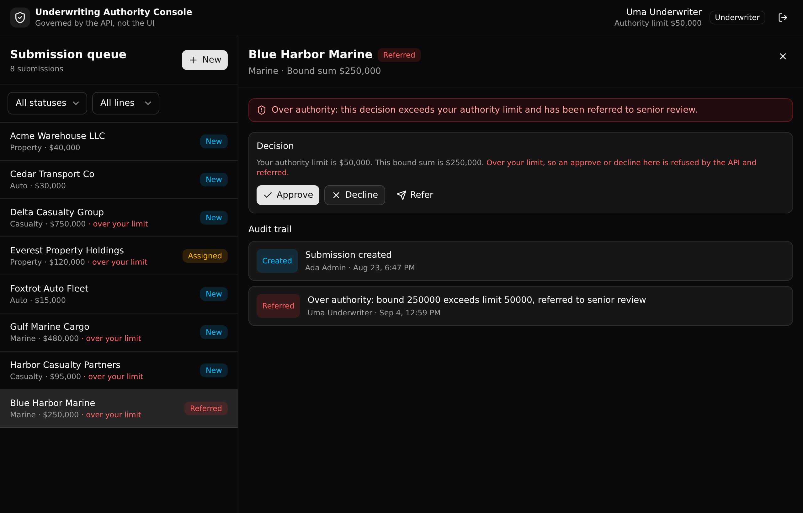

A governed underwriting backend under a plausible AI-built ops console. An underwriter can decision a submission only up to their role's authority limit. An over-limit approval is refused server side and referred to senior review, whatever the frontend sends, and every action is written to an append-only audit trail.

An AI builder can generate the screens. It cannot own the rule that decides who is allowed to approve what. That rule belongs in one governed API layer a platform team can read, version, and audit. This backend is that layer.
The decision endpoint checks the caller's authority limit against the submission's bound sum. Over the limit, it refuses with a 403 and sets the submission to referred, whatever the client sent.
A refused over-limit attempt is not lost. It is written to the trail as a referred event with the exact numbers, so the referral is auditable.
Assignment is limited to a senior underwriter or an admin with a per-endpoint precondition. A plain underwriter's assign request is refused at the API.
Auth is a users auth table plus a token and per-endpoint role and authority checks. There is no row-level security, which is how Xano models access.
| Verb | Path | What it enforces |
|---|---|---|
| POST | /api:auth/login | Issues a bearer token. No open signup; users are seeded. |
| GET | /api:auth/me | The caller's identity, role, and authority limit. |
| POST | /api:uw/submissions | Files a submission. Any authenticated role. Logs created. |
| GET | /api:uw/queue | Lists submissions with optional status and line filters. |
| GET | /api:uw/underwriters | The active users a submission can be assigned to. |
| GET | /api:uw/submissions/{id} | One submission joined with its full audit trail. |
| POST | /api:uw/submissions/{id}/assign | Assigns a submission. Senior or admin only. |
| POST | /api:uw/submissions/{id}/decision | The core rule. Within authority it decisions; over authority it refuses and refers. |
| POST | /api:uw/submissions/{id}/refer | Refers a submission to senior review. |
One click sign in as a seeded underwriter, senior underwriter, or admin. The role drives what the console offers.
The submissions list with status and line filters. Rows above your limit are flagged. Assign is shown only to a senior or admin.
A decision panel, the role and limit banner, and the audit trail. An over-limit decision comes back refused and referred.
Every path and request and response type is derived from the backend query defs. No hand-typed URLs, no drift.
Stand up your own live copy, then adapt the pattern to your domain. Paste this to a coding agent, or run the commands yourself.
Clone the Xano template at
https://github.com/xano-scratch/underwriting-authority-console and stand up my own copy.
Run `npm install`, then `npx xanots login` and `npm run xano:deploy` to get a live
backend and frontend. Then help me adapt it to my domain: keep the pattern of enforcing
the decision rule in the API with a per-endpoint precondition on the caller's role and a
numeric limit, and change the tables, the roles, and the rule to fit my use case.Or by hand:
git clone https://github.com/xano-scratch/underwriting-authority-console.git
cd underwriting-authority-console
npm install
npx xanots login
npm run xano:deploynpm run xano:deploy for a fresh
live copy and URL.